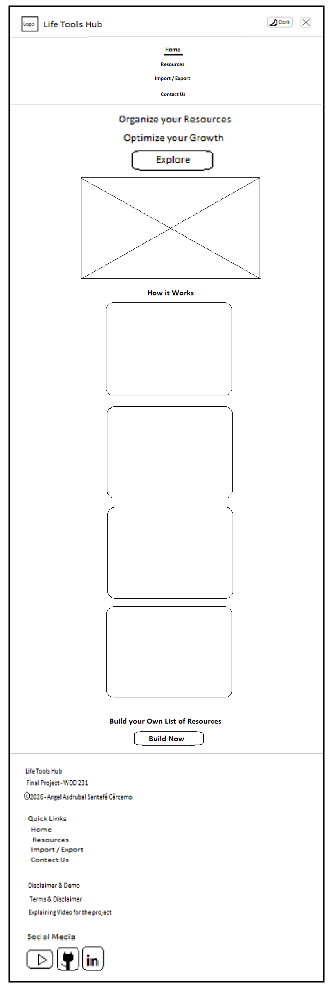
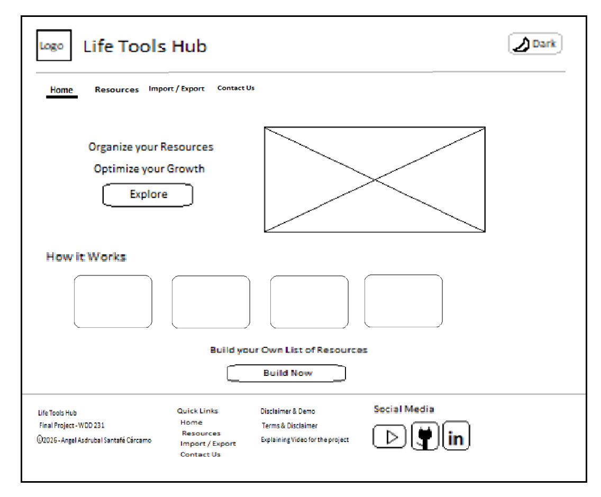

Site Name: Life Tools Hub
Site Purpose: Life Tools Hub serves as a unified, high-performance digital command center designed to aggregate, organize, and manage curated web resources across programming, fitness, cooking, and gaming. Built with offline-first local storage capabilities and custom backup management, it enables users to seamlessly access, filter, and extend their essential daily web applications without server overhead.
Target Audience: Software developers, programmers, gamers, students, and digital enthusiasts who require a fast, clean, and customizable portal to organize their daily tools with zero visual clutter.
Designed specifically to minimize eye fatigue during extended screen sessions through high-contrast, developer-friendly slate and off-white tones paired with vibrant yellow accents.
'Inter', system-ui,
sans-serif) for high legibility, clean layout structure, and instant cross-platform loading.index.html): Features value proposition, interactive features
showcase, responsive mobile navigation, and theme toggling.resources.html): Displays dynamic categorizations,
favorite management, interactive Open Graph resource cards, and tool/category creation modals.import-export.html): Interactive category checklist
filters, JSON backup generator, and seamless local data sync.contact.html): Clean feedback form interface for user
inquiries and feature requests.Hand-drawn wireframe sketches (created using the program PAINT, native in all the Microsoft OS.) illustrating the responsive layout structure for small (mobile) and larger (desktop) screen viewports.

